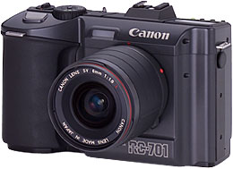
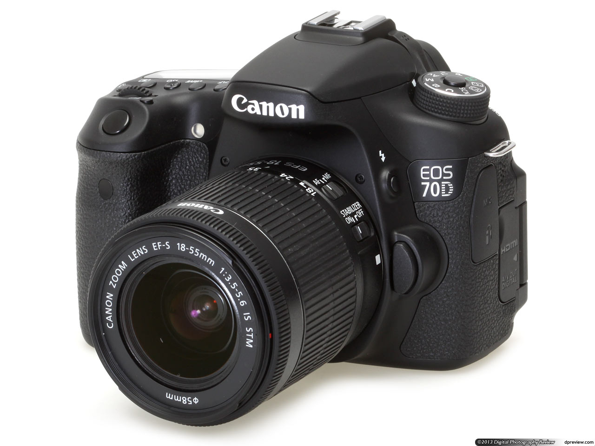

Canon
Canon is een multi-national met het hoofdkantoor in Tokyo, Japan. Canon maakt producten die gebruik maken van optische opname technologie, voor bedrijven en consumenten.
Canon maakt digitale camera's vanaf 1984 en analoge camera's vanaf hun oprichting in 1937. Toen Canon nog een jong bedrijf was hadden ze nog niet de mogelijkheid om zelf lenzen te maken. In die tijd gebruikte ze lenzen van het bedrijf Nippon Kogaku, tegenwoordig bekend als Nikkon.
De modellen
Een bekende serie producten van Canon is de EOS serie bestaande uit digitale spiegel reflex camera's. Het eerste product uit deze serie was de RC-701. Canon heeft ook de Digital IXUS en PowerShot series uitgebracht. Deze product lijnen zijn meer bedoelt voor de consument die niet de beste kwalitiet foto's zoekt.
- De meest recente Canon DSLR camera's zijn de:
- - D70
- - D700
- - D100
Er zijn ook oudere modellen nog steeds verkrijgbaar, maar de nieuwe modellen maken gebruik van een verbeterde image processor. Dit betekent betere beeld opnamen en sneller foto's achter elkaar maken.